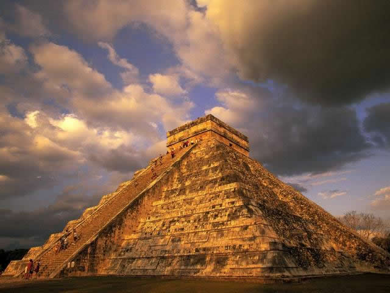

Explicación de la Cultura Maya
La cultura maya es considerada una de las civilizaciones más importantes de Mesoamérica. Realizaron grandes
aportaciones a la arquitectura, astronomía, medicina y matemáticas. Su legado e historia han inspirado un
sinfín de investigaciones para descifrar cómo vivían y por qué abandonaron sus esplendorosas ciudades.

Sistema de escritura
Los Mayas desarrollaron un complejo sistema de escritura jeroglífica, utilizado principalmente para
registrar eventos históricos y religiosos.
Centros urbanos
Construyeron impresionantes ciudades-estado, como Tikal y Chichén Itzá, con grandes templos y palacios
que reflejan su sofisticado sistema de gobierno.

Desarrollo científico
Los Mayas realizaron importantes avances en matemáticas, astronomía y medicina, dejando un legado
significativo para la humanidad.

Zonas geográficas
La cultura Maya se extendió por varios países en Mesoamérica, incluyendo México, Guatemala, Honduras, El
Salvador y Belice.

Paisajes naturales
Sus territorios cubrían una amplia variedad de paisajes, desde densas selvas tropicales hasta secas
mesetas y costas caribeñas.

Bellezas naturales
La región maya cuenta con hermosos cenotes, cuevas y ríos subterráneos, que eran sagrados para los
antiguos mayas.
Preclásico (2000 A.N.E. - 250 D.N.E.)
Se establecen las primeras aldeas, se desarrolla la agricultura y se inicia el comercio. Se construyen
las primeras pirámides ceremoniales.
Clásico (250 D.N.E. - 900 D.N.E.)
Periodo de mayor esplendor de la cultura Maya, con el desarrollo de grandes centros urbanos y avances en
ciencia, arte y arquitectura.
Posclásico (900 D.N.E. - 1500 D.N.E.)
Declive de los centros urbanos mayas, aunque algunas ciudades como Mayapán y Chichén Itzá continúan
floreciendo.
Pirámides
Construyeron majestuosas pirámides escalonadas, como la Pirámide de Kukulcán en Chichén Itzá, destacando
su precisión astronómica.
Esculturas
Crearon impresionantes esculturas en piedra, representando dioses, reyes y eventos históricos con gran
detalle y realismo.
Murales
Embellecieron sus templos con coloridos murales que narraban mitos y leyendas, ofreciendo una visión de
su cosmovisión y creencias.
Dioses y diosas
Los Mayas adoraban a una amplia variedad de deidades, como el dios del sol, del maíz y de la lluvia,
quienes influían en la vida cotidiana.
Rituales sagrados
Practicaban ceremonias y rituales para mantener el equilibrio entre el mundo natural y espiritual,
buscando la protección divina y la prosperidad.
Cosmovisión cíclica
Creían en un ciclo eterno de creación y destrucción, donde cada era era influenciada por el cosmos y el
movimiento de los astros.
Calendario solar
Basado en la posición del sol, dividido en 18 meses de 20 días cada uno, más 5 días adicionales
considerados de mala suerte.
Calendario sagrado
Combinaba ciclos de 260 días y 13 números sagrados, utilizado para rituales y predicciones.
Sistema de escritura
Usando jeroglíficos, combinaban imágenes y glifos para representar sonidos y palabras, transmitiendo su
historia y conocimiento.

Tikal
Una de las ciudades más importantes y emblemáticas de la civilización Maya, con impresionantes templos y una biodiversa selva circundante.

Chichén Itzá
Una de las Siete Maravillas del Mundo Moderno, con la impresionante Pirámide de Kukulcán y el Templo de los Guerreros.
Palenque
Conocida por sus elegantes esculturas y su Templo de las Inscripciones, donde se encontró la tumba del gobernante Pakal el Grande.

Copán
Especialmente notable por su rica iconografía, que representa mitos y genealogías reales, así como los famosos altares de sacrificio.
Arte y diseño
El arte Maya ha inspirado a artistas contemporáneos y su simbolismo se refleja en joyería, textiles y diseño de interiores.
Medicina natural
Muchos remedios tradicionales de la medicina maya se siguen utilizando en la actualidad, destacando su conocimiento de las propiedades curativas de las plantas.
Turismo cultural
Los sitios arqueológicos mayas atraen millones de visitantes cada año, deleitándose con la majestuosidad y misterio de esta antigua cultura.